AI & Art
The Next Evolution
Gabe DeWitt · Fairmont State University · 2026
← → navigate topics ↑ ↓ dive deeper ESC overview
Gabe DeWitt, PE
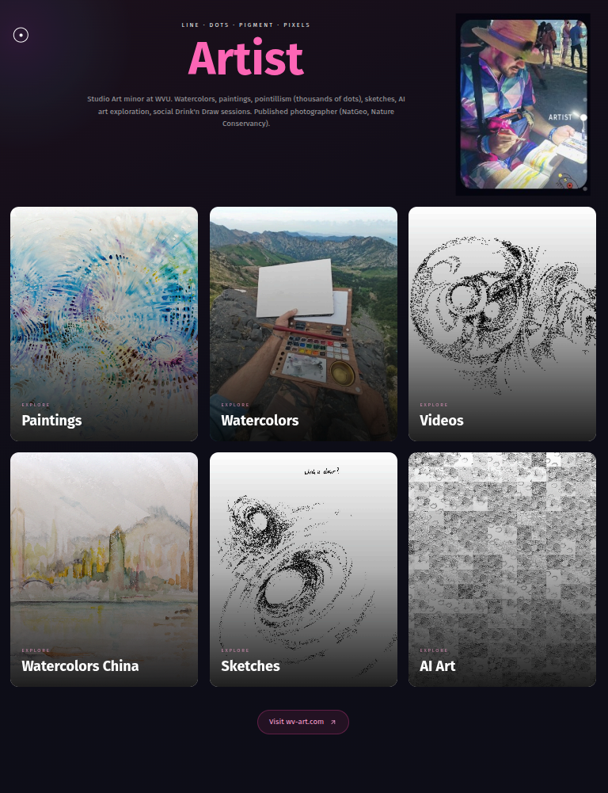
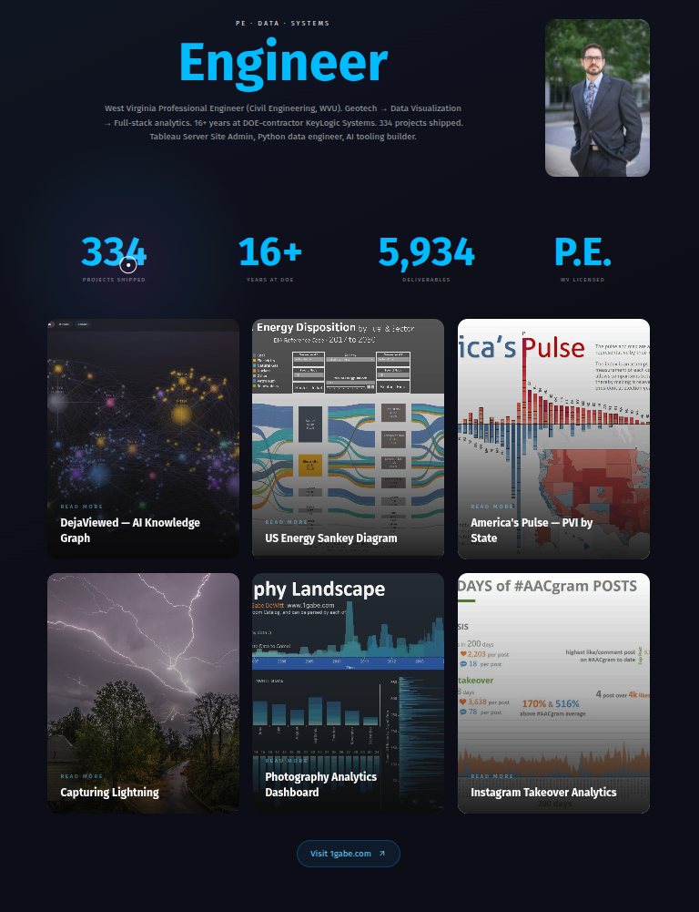
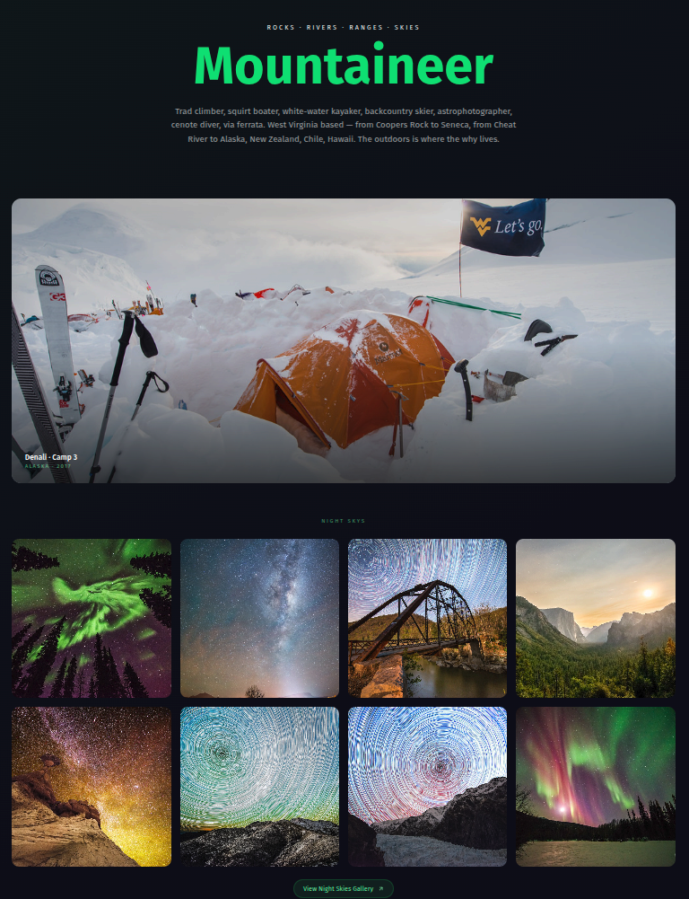
My Art
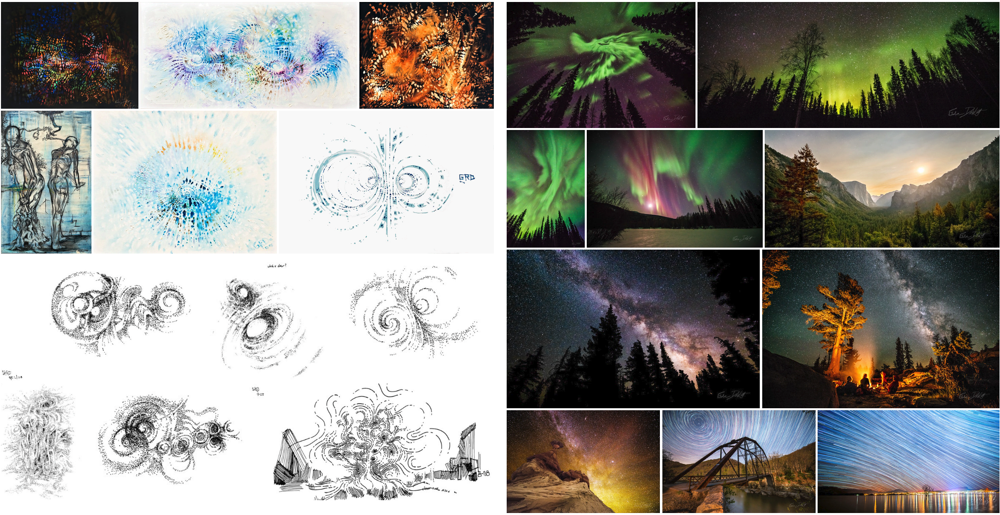
Astrophotography · Aurora · Watercolor · Ink pointillism
My Work
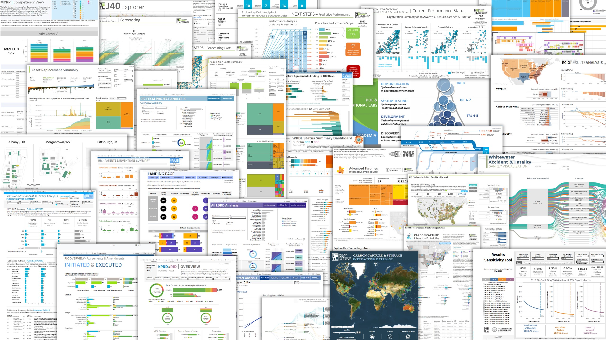
"AI" as a User Interface

What's Actually Happening
Linear Algebra — data organized into massive grids of numbers
Calculus — gradient descent tweaks billions of weights to reduce error
Probability — predicts the most statistically likely next word or pixel
Pattern recognition at a scale orders of magnitude beyond anything before.
"AI is the performance on the stage.
Machine Learning is the physics that makes the equipment move."
It's not thinking.
It's calculating.
The Trick
Talk to it like a robot.
It listens really well.
You: I have 40 watercolor paintings photographed on my phone. Build me a portfolio website with a gallery, an about page with my artist statement, and a contact form. Make it feel like handmade paper — warm, textured, not corporate.
AI: I'll set that up. Cream linen background, subtle paper texture, masonry gallery grid that loads your images. Artist statement section with your bio. Contact form that emails you directly...
The Landscape April 2026

Source: Artificial Analysis · Composite benchmark scores
The Trajectory
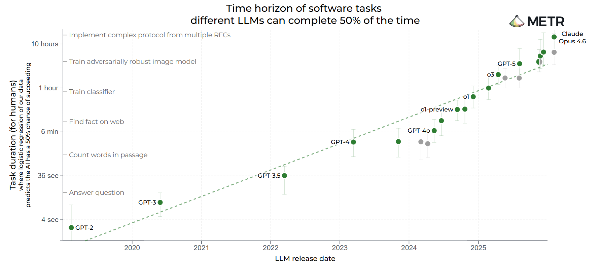
That Y-axis is logarithmic. This line is exponential growth.
AI Modalities
💬 Chatbots
ChatGPT, Claude, Gemini
Text, code, images, reasoning
🖥️ Copilot IDEs
Cursor, VS Code, Windsurf
Edit, run, debug in your editor
⌨️ CLI Agents
Claude Code, Codex, Gemini CLI
AI does anything a human can from terminal
🎨 Image Gen
Midjourney, DALL-E, Stable Diffusion
Text → images, style transfer
🎬 Video Gen
Sora, Runway, Kling
Text → video, motion, VFX
🧊 3D Gen
World Labs, Tripo, Meshy
Text/image → 3D models
We've Seen This Before
Every transformative tool faced the same resistance.
The Calculator 1970s
"Calculators will destroy children's ability to do math!"
They were kind of right. 😄
But the engineers who embraced them built rockets.
AutoCAD 1980s
"This will ruin the craft of drafting!"
Every drafter who refused to learn it
was replaced by one who did.
The craft didn't die. It evolved.
Photoshop 1990s
"Digital art isn't real art!"
Now it's the industry standard.
The artists who learned it first got the jobs.
Digital Photography 2000s
"Digital will never match the quality of film!"
Kodak believed that. Filed for bankruptcy in 2012.
The photographers who switched early defined the next era.
Every. Single. Time.
3D Printing 2010s
"It's not real craftsmanship!"
Now sculptors, architects, and designers use it daily.
It didn't replace hands. It extended them.
AI 2020s
"AI will replace artists!"
No.
Artists who use AI will replace artists who don't.
My Coding Ceiling
I'm great at reading code.
I'm terrible at writing it.
For over a decade, I had ideas I couldn't build.
I could see the architecture. I just couldn't type the syntax.
The Old Days 2015–2018
Click any badge to see the live project · All still running on 1gabe.com
Art I've Done with AI
Before the chatbots. Before the hype.
StyleGAN · NVIDIA · 30,000 iterations · 100% GPU for a week
The Pipeline
This taught
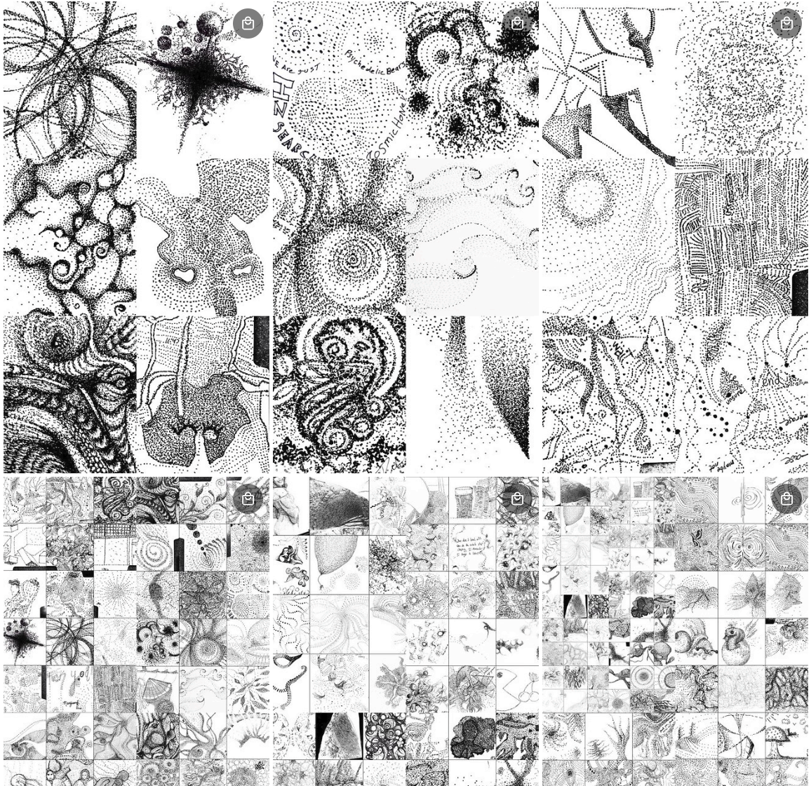
This taught
This
AI Art Videos
So What?
These look pretty. They make cool posts.
But they serve no purpose.
I hadn't collected the data I needed.
The process wasn't what I thought it could be.
The interesting part isn't the output.
It's that I could attempt it at all.
Work I've Done with AI
Using computational power to grow a project
From a 2MB file analyzing one year by month
→ 10 years by hour for the entire US gas turbine fleet
The Starting Point
I start by free-writing what I want, then free-writing how I think I'd accomplish it:
Me: I'd like to write python on script to go through this hourly data file, emissions-hourly-2024-q1_100k.csv. This is just an export of 100k rows as the full data set is about 7 gigs. I only want to look at IDs that match another data set I have NETLTurbineID.xlsx. In my hourly data, a new Column "UniquID" will be added based on [Facility ID] + " – " + [Unit ID] in the hourly data set. My resulting data will only keep Unique IDs matched between NETLTurbineID.xlsx and emissions-hourly-2024-q1_100k.csv. I'd like to begin by loading this data into a data frame for analysis and visualization and data transformation exports. This is where we'll start.
The Result
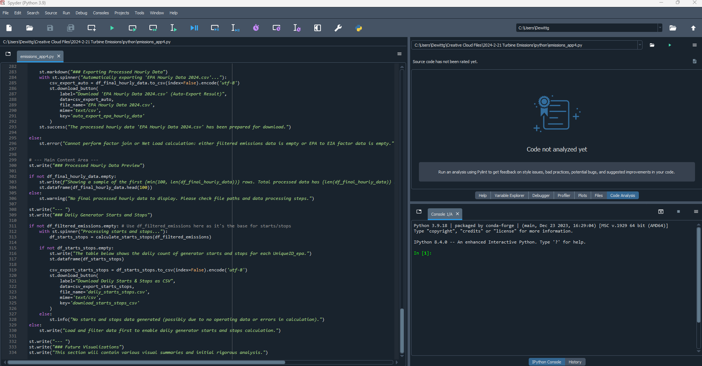
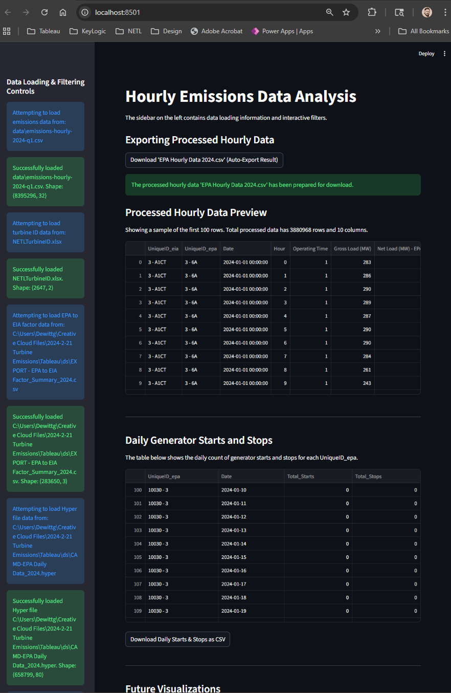
Turbine Program Dashboards
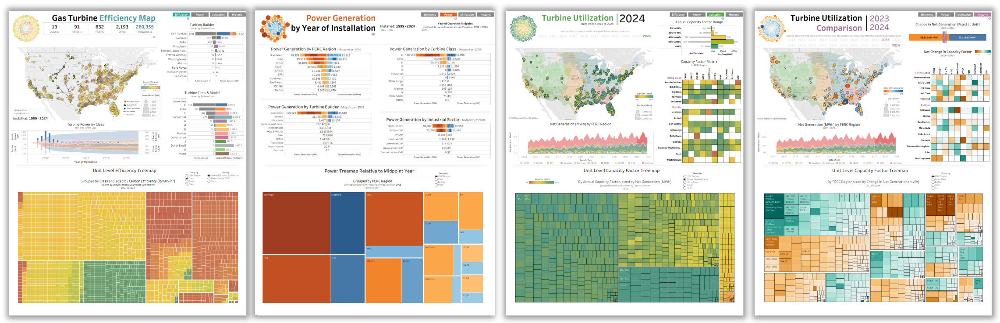
The Scale Jump
Start
2 MB
1 year · Monthly · One plant
Then
7 GB
Quarterly exports · Hourly data
Now
100 GB
10 years · Hourly · Entire US fleet
The tools did the heavy lifting.
Citation Tree
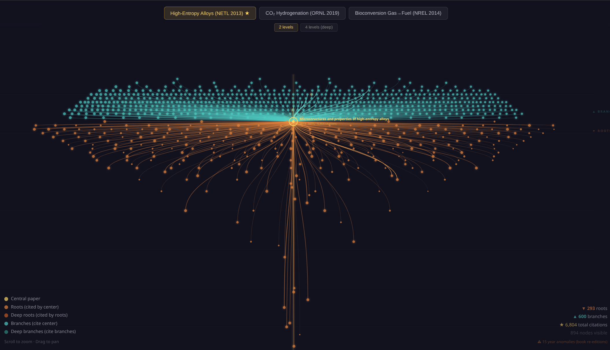
6,804 citations · 894 nodes · Built with AI from a single seed paper
DejaViewed
A living content intelligence platform
The Catalog
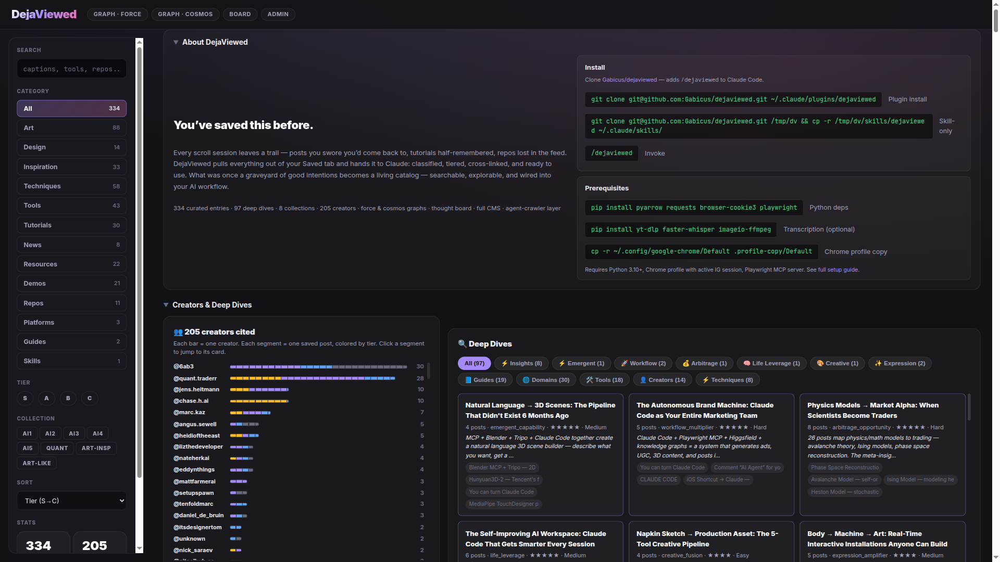
Deep Dives & Creators

Graph Cosmos

Force-Directed Graph

Deeper Dives
AI-generated research pages built from my curated content
Body → Machine → Art
A $40,000 interactive installation you can build for $300
open deep dive →
Napkin Sketch → Production Asset
Your own design team in a 5-tool creative pipeline
open deep dive →
Code as Canvas
When algorithms become the artist
open deep dive →
Design Resources
Archive.org collections — public domain, free to use
All public domain · Use for reference, composition, training data
All-Seeing Eye — Evolution
Next.js · React Three Fiber · Three.js · WebGL · Zustand · GLSL Shaders
All-Seeing Eye — Live
3D Cosmos — Live
Devil's Advocate
But the foundation
still matters.
Knowing how film works makes you a better digital photographer.
Understanding anatomy makes you a better 3D modeler.
Learning music theory makes you a better producer.
Tools raise the ceiling — but knowledge is the floor.
When the Floor Disappears
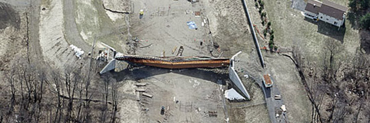
Marcy Bridge, NY · October 2002
170-ft pedestrian bridge rotated and collapsed during concrete placement. One killed, nine injured.
No top-flange bracing on the steel tub girder.
Lateral torsional buckling under construction loads
— the software modeled the finished composite section.
The software got the final design right.
Nobody checked the construction sequence.
AASHTO rewrote their specs after this.
People will skip it.
They'll generate code they can't read.
Designs they can't evaluate.
Structures they can't verify.
And those are the ones we have to worry about
launching Skynet.
Devil's Advocate
The Environmental Cost
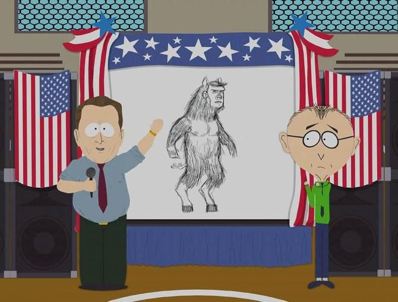
AI training and inference consume massive energy. This is real. This matters.
But it's the same pattern we've seen with every technology
we've rapidly adopted as a species — cars, air travel,
smartphones, streaming, crypto —
We consume first. Think about consequences later.
AI's footprint is no less and no more urgent
than any other carbon problem we've created.
It needs solving. Not ignoring.
The blank page
is gone.
Every generation has had more opportunity for inspiration than the last.
But from now on — you'll never have to stare at an empty screen
wondering where to start. You can ask for ideas. Get a synopsis
of something you half-remember from a lecture you weren't paying attention to.
Never lose your love for
the pleasure of finding things out.
And always keep your hand on the wheel.
Never let AI do all the work for you.
Because what fun is that?
Let's Build Something
Right now.
One prompt.
Interactive hand-tracking energy visualizer.
What You Say
Human: Build a webcam hand-tracking art visualizer. MediaPipe Hands, dual canvas, neon rainbow beams between fingertips, 4 modes (antigravity, geometric mesh, blue lightning, minimal), pinch effects, color themes, performance toggles. Single HTML file, dark UI.
42 words. That's it.
What the AI Understands
AI interprets: Single HTML file. Webcam hand-tracking visualizer using MediaPipe Hands. Dual canvas — bg for camera feed, fx for effects with trail persistence. Detect 21 hand landmarks, draw neon skeleton + glowing fingertip nodes. When 2 hands visible: thick neon beams between matching fingertips with 3-layer glow (outer, core color, white center). 4 modes: Antigravity (rainbow beams + cross-connections + geometric fills), Geometric Mesh (all-to-all connections + triangle fills), Lightning (blue branching electric arcs with forks), Minimal (clean lines + midpoint nodes). Pinch detection: thumb-to-fingertip distance threshold triggers expanding ring burst + sparkle rays. Controls: beam width, glow, trail, camera opacity, skeleton/node/pinch toggles, color themes (neon/electric/fire/matrix/vapor), lite mode for FPS. Keyboard: 1-4 modes, H hide UI, F fullscreen. Dark UI, start screen with gradient title.
You provide the vision. The AI fills in the engineering.
Live Demo
Built by AI · ~550 lines · No human code written
Keys: 1-4 modes · H hide controls · F fullscreen
What Will You Build?
What Can't You Build?
The tools are here. The barrier is gone.
The only question left is what you want to make.
Gabe DeWitt
My Creative Portfolio

Built in ~3 hours with Claude Code